ACTUAL GAME CAPTURES · RETAINED BLOCKOUT · SHOWCASE UNFINISHED
A more connected Rootbound
Faceted ground rises and planted shoulders now connect more of the route. The Verge receives a dry stone edge. Existing assets and placeholders carry this pass; asset experiments remain paused.
The route remains intentionally open. The next study is camera framing: much of the new structure sits near the top of the portrait frame. This is not a finished habitat or proof of phone performance.
Checkpoint and play checks · Independent review · Habitat dossier
1,435 tests, verification and ZIP pass. Both short shoulder crossings stayed grounded; visible mesh and physical contact agree. All 298 protected resource and wildlife sources remain exact.
Orientation Meadow
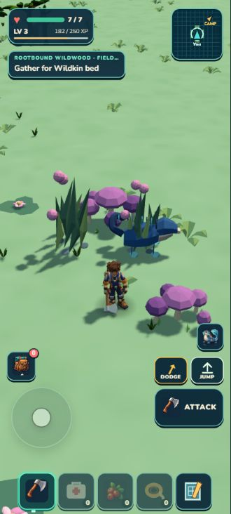
Previous blockout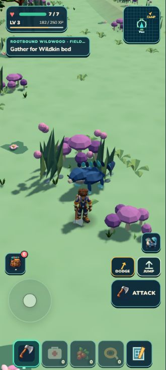
Retained terrain + coverageRoot Galleries
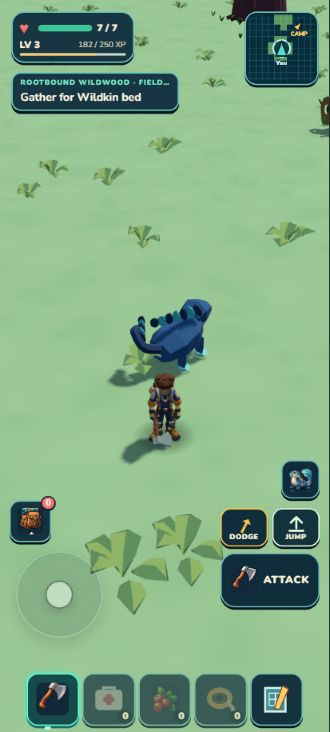
Previous blockout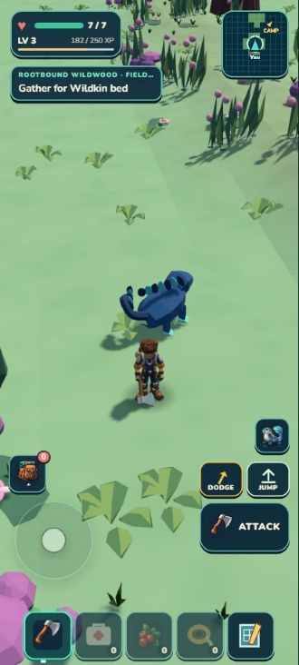
Retained terrain + coverageLantern Grove
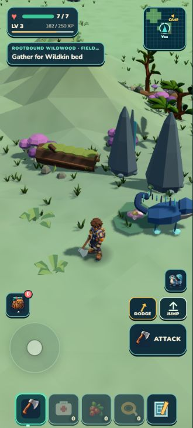
Previous blockoutRetained terrain + coverageThornstone Verge
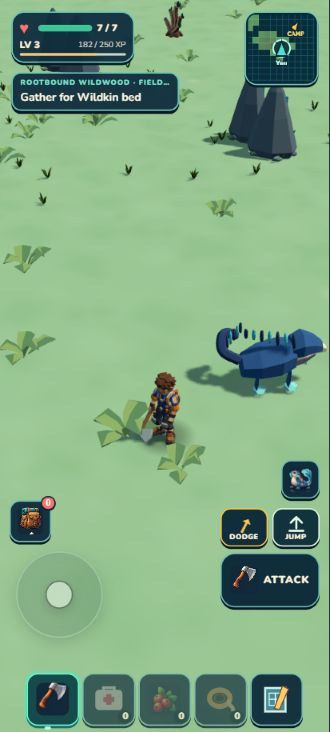
Previous blockout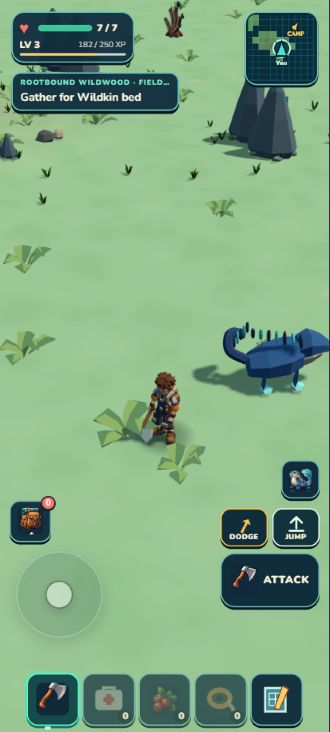
Retained terrain + coverageHeartroot Crown
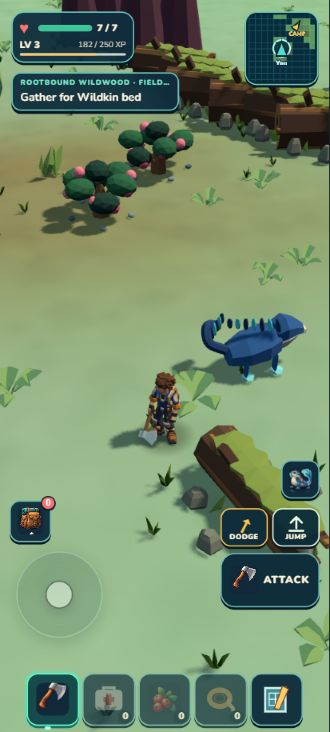
Previous blockout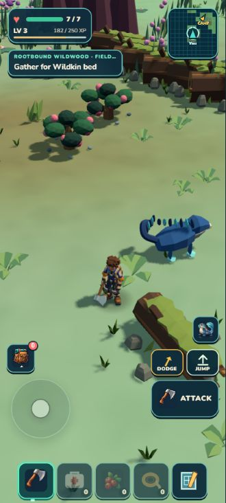
Retained terrain + coverageWhole-region diagnostic
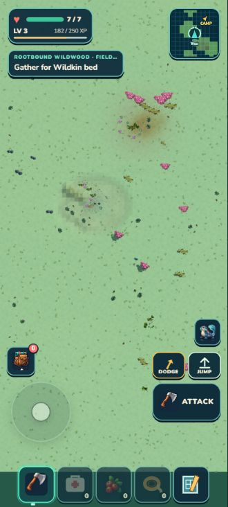
Previous blockout Retained terrain + coverage
Retained terrain + coveragePackaged game
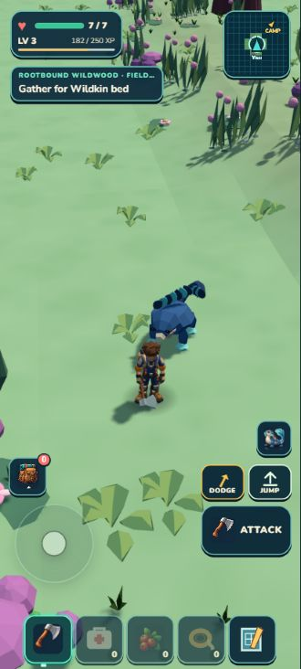
Gallery, normal portrait camera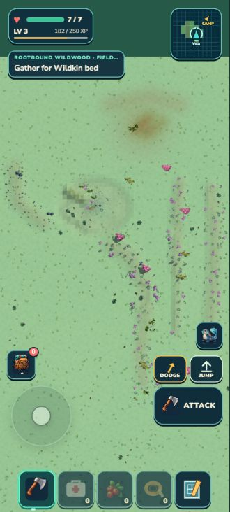
Region, diagnostic overheadOverhead removes fog and uses a separate diagnostic camera. Portraits retain normal gameplay framing and HUD; developer controls are hidden. Actors and camera settling can differ between captures.